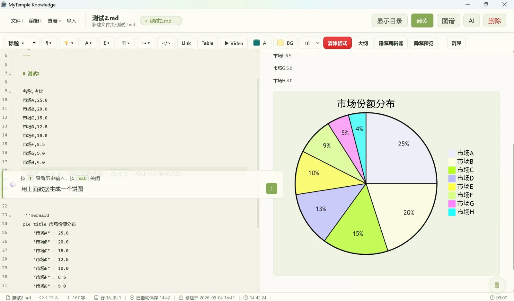
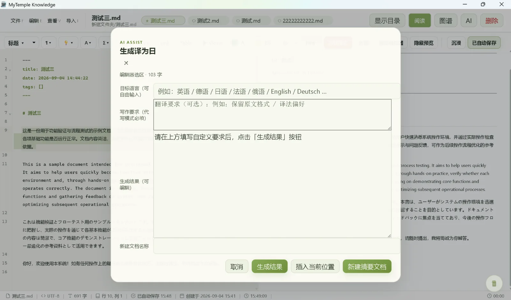
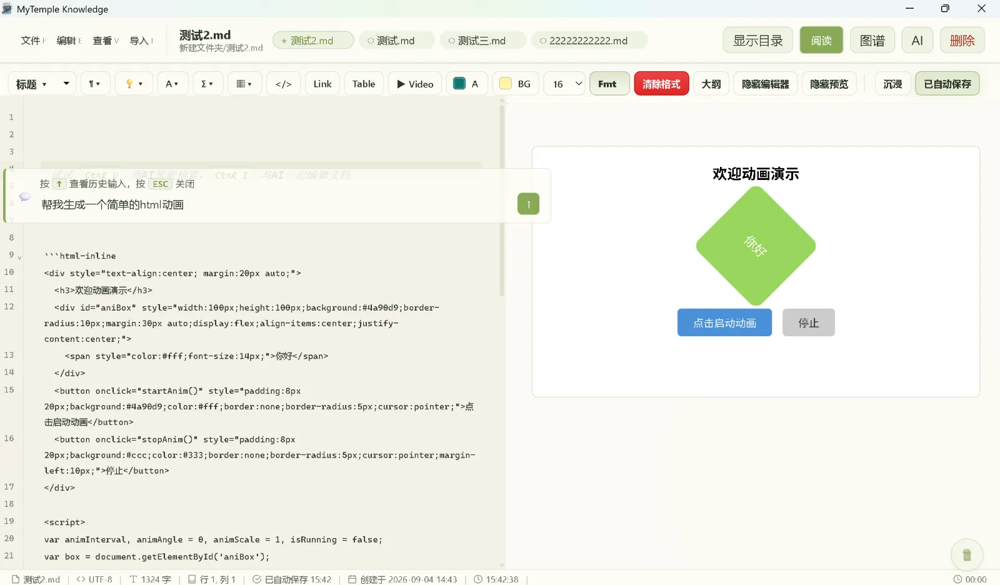

01
阅读模式
目录、正文与任务勾选分离呈现，支持预估阅读时间与章节快速跳转

本地 Markdown 工作区 v2.1.13 桌面版
围绕本地 Markdown 文件提供阅读、编辑、目录、图谱、检索、主题与多工作区管理。
Windows 桌面端 · 本地文件优先 · 内容助手为可选接入
适合长期积累与维护的资料
CORE CAPABILITIES
不改变 Markdown 文件本身，围绕阅读、编辑、图谱、检索与日常维护补强。
阅读强调目录预览，编辑强调输入稳定与快捷键。
围绕本地目录组织，可迁移、可备份、可离线。
文档、标签与语义概念分层展示关系。
轻量 Canvas 绘图，Excalidraw 兼容。
40+ 语言代码块高亮，亮暗主题适配。
可选接入 Ollama / DeepSeek，润色翻译与图表生成。
Alt+A 区域截图标注，Alt+M 区域录屏，无感触发。
JSON 文件自动渲染树形视图，Markdown 中 JSON 代码块也可格式化显示。
内置版本检查与一键下载更新，无需手动关注发布渠道。
柔光护眼主题默认降低对比度，长时间使用不刺眼。
关键词检索、语义检索、Frontmatter 标准化。
目录懒加载、增量解析、Worker 渲染、自适应帧率。
PRODUCT SURFACE
围绕阅读、编辑、图谱、工作区与 AI 内容生成六大核心场景。
目录、正文与任务勾选分离呈现，支持预估阅读时间与章节快速跳转
格式工具栏、实时预览与快捷键面板围绕输入稳定性展开，代码补全与行内对话栏围绕光标位置精准定位

文档、标签与语义概念分层展示，轻柔关系线替代高亮噪音，重点节点一目了然

多工作区切换、自动保存与增量索引围绕本地目录组织，可迁移、可备份、可离线使用

文档间链接关系自动生成知识神经图谱，最新文档自动居中，关系强弱一眼看清

AI 生成 Mermaid 图表、Excalidraw 绘图，直接在文档中实时渲染显示

OPTIONAL ASSIST
内容助手为可选接入，默认关闭。开启后可在编辑过程中提供对话、润色翻译、多语种翻译、语义检索与 AI 生成内容等辅助能力。
选中文本一键翻译为多种语言，保留 Markdown 结构，翻译结果直接插入文档

AI 生成 HTML/CSS/JS 动画代码，直接在文档中实时渲染显示交互效果

自然语言检索知识库内容，快速定位相关文档段落

SOFT EYECARE PRESETS
参考柔光纸面与浅绿工作台思路，降低大面积纯白刺眼感。
干净明亮，适合白天快速浏览与校对。
略带暖意的纸面色，更柔和，也更接近日常阅读。
保留层级对比，适合夜间集中输入与排版。
轻豆沙绿底色，降低反差，适合长时间阅读与维护。
偏复古的纸面感，适合长篇阅读、摘录与整理。
偏冷静的工作底色，适合技术资料和结构化文档。
DOCUMENTS & GUIDES
版本下载